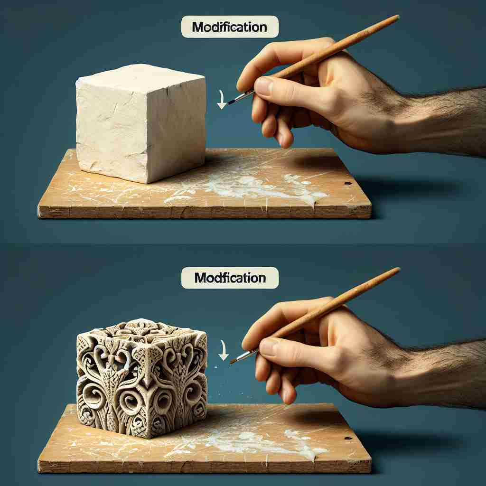

💬 The mechanic is working on a bicycle modification to improve its performance.

💬 The artist wants to make a modification to the stone block.

💬 The man is working on a car modification to make it look brand new.
🔈 [,mɒdɪfɪ'keɪʃ(ə)n]
🗝️ n. the act or process of changing something slightly
🖼️ 在一个巨大的工厂车间里，技术员正在调整生产线上机器的设置。他仔细地转动按钮，观察机器的微小变化。这一过程展示了'modification'作为对某事物做出轻微改动的含义。
🔍 想象'modification'是一个调整旋钮，轻轻转动它就能对事物进行微小的改变。无论是计划、语言、建筑还是生物，这个概念都适用。记住这个调整旋钮的图像，可以帮助你理解和记忆'modification'在不同语境中的应用。
💬 The mechanic is working on a bicycle modification to improve its performance.
💬 The artist wants to make a modification to the stone block.
💬 The man is working on a car modification to make it look brand new.
🌳 来自词根 "mod-"（模式，方式）和后缀 "-ification"，用于表示动作或结果。"modification" 表示对事物形式或性质的改变。
💡 可以记住 "modify" 是改变的动作，而 "-fication" 后缀表示具体的结果。联想为 "模式的改变结果"，以帮助记忆其含义。
🗝️ n. a change made to something
🖼️ 想象一个房间设计现场，设计师正在与客户交流，决定将墙面颜色从白色改为浅蓝色。她用刷子试涂，呈现出一个修改后的新空间。这体现了'modification'表示对某物进行更改的含义。
💬 The new software includes several useful modifications.
❓ 从改变的过程延伸到改变的结果
🗝️ n. the act of limiting or qualifying a statement
🖼️ 在一个繁忙的会议室里，团队正在讨论项目计划。一个成员提出建议，但随后补充道：'但我们需要考虑预算限制。'这一补充限制展示了'modification'作为对陈述进行限制或修饰的含义。
💬 She agreed to the proposal with some modifications to the terms.
❓ 将改变的概念应用于语言表达
🗝️ n. a change to a building or structure
🖼️ 在一个施工现场，工匠们正在为一栋旧建筑增设一个新的阳台。他们在钢筋结构上精心施工，使这座建筑焕然一新。这演示了'modification'作为对建筑或结构的改动的定义。
💬 They made modifications to the house to make it more accessible for wheelchair users.
❓ 将改变的概念具体应用于建筑领域
🗝️ n. the process of changing a living thing through selective breeding
🖼️ 在一个现代化的研究实验室中，科学家们正在研究植物杂交育种。他们小心翼翼地选择不同品种的植物，观察后代的特征变化。这展现了'modification'表示通过选择性繁殖改变生物的过程。
💬 Genetic modification has led to the development of more resilient crop varieties.
❓ 将改变的概念应用于生物学领域